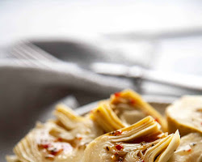

4 Season Pizza

This is a 4 Season Pizza Recipe
A flavorful pizza with a variety of toppings, including mushrooms, artichoke hearts, black olives, and prosciutto.
A delicious and satisfying pizza that is sure to please.
Ingredients
- 1 pizza dough, made from scratch or store-bought
- 1/2 cup pizza sauce
- 1/2 cup shredded mozzarella cheese
- 1/4 cup sliced mushrooms
- 1/4 cup chopped artichoke hearts
- 1/4 cup black olives, halved
- 1/4 cup sliced prosciutto
- Fresh basil leaves, for garnish
Steps
- Preheat oven to 450 degrees F (230 degrees C).
- If using store-bought dough, let it come to room temperature before rolling it out.
- Roll out the dough into a 12-inch circle.
- Spread the pizza sauce over the dough, leaving a 1-inch border.
- Top with the mozzarella cheese, mushrooms, artichoke hearts, black olives, and prosciutto.
- Bake for 15-20 minutes, or until the crust is golden brown and the cheese is melted and bubbly.
- Let cool for a few minutes before slicing and serving.
- Garnish with fresh basil leaves.